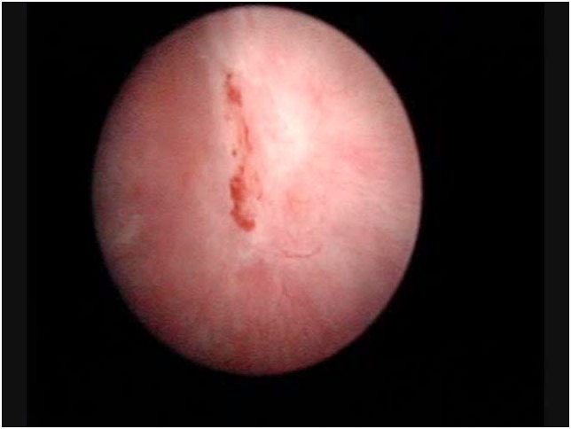

Cistite Interstiziale (C.I.)
(Dalle Linee guida 2010 della Società Europea di Urologia)
La Cistite Interstiziale (o come definita dalla Società Internazionale delle Continenza : Sindrome della vescica dolorosa), evoca purtroppo scenari apocalittici, rafforzati dalle infinite testimonianze di pazienti che ne sono afflitte. Per fortuna la maggior parte delle pazienti che temono di essere ammalate di C.I. non lo sono assolutamente ma di solito sono affette da cistite cronica o dalla Sindrome Dolorosa Cronica del Pavimento Pelvico.
Segnaliamo, per chi non la conoscesse, l’esistenza di una specifica Società, veramente molto attiva, che si occupa esclusivamente di questa malattia (www.aicionlus.org).
DEFINIZIONE
L’incidenza statistica della malattia, varia enormemente in letteratura da pubblicazione a pubblicazione. Questo dipende dal fatto che molti Lavori, soprattutto nel passato, hanno tenuto conto, per fare la diagnosi, solo dei sintomi lamentati dalla paziente, senza effettuare i test clinici standardizzati oggi richiesti (Vedi sotto) . Inoltre e questo è molto importante da sottolineare, queste statistiche variano da Paese a Paese. Ci sono infatti Paesi dove l’alta l’incidenza della malattia, può dipendere da fattori specificamente ambientali, come per esempio in Finlandia dove una ricerca del 2005 (J Urol 2005;174,2:581-583) evidenziava la presenza di 530/100.000 pazienti affette da C.I. Per la popolazione Italiana sono più applicabili le statistiche rilevate in Austria nel 2007 (Eur Urol; 2007; 51,3:803-808) che documentano un’incidenza della malattia in 306/100.000 con punte del 464/100.000 nelle donne di età media. La malattia colpisce infatti quasi esclusivamente le donne con una predominanza sull’uomo di 10:1 e con una preferenza per quelle di razza caucasica (le europee).
DIAGNOSI
(AUA guidelines 2011)
Principi di diagnosi base: storia, esame fisico, esami di laboratorio per escludere altre patologie simili (vedi sotto). Secondo il parere degli esperti dell’American Urologic Association, la cistoscopia e l’esame urodinamico sono inutili nei casi in cui la tipologia dei sintomi sia eclatante. Queste due indagini rimangono invece appropriate quando, dopo le valutazioni di base, la diagnosi rimane in dubbio. Il test di sensibilità al potassio non dovrebbe essere usato nella clinica di base in quanto il suo risultato può cambiare sia la direzione che l’approccio al trattamento clinico.
CRITERIO DI INCLUSIONE AUTOMATICA:
- Comparsa di ulcera di Hunner all’idrodistensione (presente in meno del 10% delle pazienti).
{kind=link}
CRITERI DI INCLUSIONE:
- Dolore vescicale al riempimento che si attenua con lo svuotamento (motivo della frequenza minzionale).
- Dolore (sovrapubico, pelvico, uretrale, vaginale o perineale).
 Glomerulazione (comparsa di petecchie emorragiche) durante la idrodistensione (90% delle pazienti).
Glomerulazione (comparsa di petecchie emorragiche) durante la idrodistensione (90% delle pazienti).- Scarsa sopportazione della idrodistensione.
Le caratteristiche del dolore della C.I. sono il sintomo chiave della malattia:
- E’ correlato con il grado della distensione vescicale.
- E’ localizzato in sede sovrapubica con possibile irradiazione agli inguini, alla vagina, al retto o al sacro.
- Si attenua con lo svuotamento vescicale ma ritorna subito dopo.
CRITERI DI ESCLUSIONE:
- Età inferiore ai 18 anni
- Neoplasie maligne o benigne della vescica
- Neoplasia uterina, cervicale, vaginale o uretrale
- Cistite postattinica
- Cistite tubercolare
- Cistite batterica in atto
- Vaginite batterica o micotica concomitante
- Cistite da ciclofosfamide
- Diverticolo uretrale sintomatico
- Herpes genitale attivo
- Calcolosi vescicale o uretrale
- Frequenza minzionale diurna inferiore alle 5 volte nelle 12 ore
- Frequenza minzionale notturna inferiore alle 2 volte
- Miglioramento o scomparsa dei sintomi con antibiotici, antisettici urinari, analgesici
- Durata inferiore ai 12 mesi
- Presenza di vescica iperattiva (all’esame urodinamico)
- Capacità vescicale maggiore di 400 cc. in assenza di urgenza minzionale.
Pertanto ricordiamo che la diagnosi di cistite interstiziale diventa molto probante secondo Ottem ( Urology 2005;66(3):494-99) con:
- Cistoscopia con una idrodistensione per 1-3 minuti con 100 cc.di acqua.
- Comparsa di emorragie petecchiali in almeno 3 quadranti vescicali.
- Presenza di almeno 10 petecchie per quadrante.
Circa la comparsa di glomerulazioni (petecchie) ricordiamo che è variabile e la sua assenza può portare erroneamente ad escludere la diagnosi di C.I. Inoltre ricordiamo che le glomerulazioni si possono rilevare nelle vesciche irradiate, nelle vesciche defunzionalizzate, nel cancro della vescica, nell’esposizione a chemioterapici ed anche, seppur raramente, nelle vesciche normali
Purtuttavia ci sono altri segni di probabilità, come:
- Presenza durante l’esame urodinamico di ridotta capacità vescicale, con urgenza che compare a meno di 150cc.
- Dolore all’istillazione endovescicale di soluzione di potassio(nel 75% delle pazienti). Ultimamente si è ipotizzato che la positività a questo test sia positivamente predittiva per la risposta ad un trattamento con i GAGs (Gupta; BJU Int 2005;96(7):1063-66).
- La biopsia vescicale nelle linee guida dell’EAU non è patognomonica, ma è considerata di supporto alla diagnosi se si evidenzia la presenza di mast cells (Nordling;Eur Urol 2004;45(5):662-69).
PATOGENESI
Ci sono molteplici differenti ipotesi sulle cause della C.I.
1)Infezioni: nonostante l’uso di ricerche sofisticatissime di batteri (compreso l’Helicobacter Pilorii) o di virus, non si sono mai trovati microrganismi patogeni.
2)Infiammazione: è ritenuta una parte essenziale della malattia, associaae a pancistite e infiltrati perineurali di linfociti e plasmacellule. Ma è da considerare probabilmente un effetto e non una causa.
3)Attivazione di Mast Cells: ricordiamo che le mast cells sono immunocellule contenenti fattori fortemente proinfiammatori come istamina, serotonina e citochine. Nelle biopsie vescicali, come sopra ricordato, ci può essere un incremento delle mast cells di 10 volte (Peeker; J Urol 2000; 163(3):1009-15).
4)Disfunzione endoteliale con difetto dei GAGs: tutte le pazienti con C.I. presentano fragilità o lesioni dell’endotelio che si manifestano con fissurazioni o rotture dell’endotelio alla idrodistensione e successiva comparsa di petecchie. L’aumento del livello di GAG solfati nelle pazienti con sintomi più severi è considerato da alcuni come un marker per monitorare l’evoluzione della malattia (Lokeshwar; J Urol 2005;174(1):344-49).
5)Alterazione dell’autoimmunità: fin dal 1970 sono stati fatti molteplici studi sugli autoanticorpi in corso di C.I. I risultati sono però tuttora inconcludenti.
6)Alterazione del metabolismo dell’Ossido Nitrico: anche in questo caso i risultati sono stati inconcludenti, sebbene il livello di evaporazione dell’ossido nitrico nelle urine delle pazienti con C.I. sia notevolmente più alto che nei gruppi di controllo (Logadottir; J Urol 2004;171(3):1148-50).
7)Ipotesi neurobiologica: nelle pazienti con C.I. si rileva un incremento dell’innervazione simpatica con aumento dei neurotrasmettitori. Pertanto da più parti si ipotizza che questo sia l’avvio alla cascata di eventi che portano alla malattia conclamata.
8)Sostanze tossiche: la presenza di sostanze acide o aggressive nelle urine, in presenza di labilità dell’endotelio può probabilmente innescare una caduta delle difese della mucosa.
9)Ipossia: si è osservato che esiste una diminuzione della densità dei capillari nel subendotelio in presenza di C.I. Tale situazione di ipovascolarizzazione potrebbe portare ad una diminuzione dell’ossigenazione della parete. Seguendo questa ipotesi, in effetti, con sedute di terapia iperbarica si sono ottenute delle remissioni della malattia (Pontari; J Urol 1999;162(2):330-34).
11)Aumento dell’ NGF (Nervous Growth Factor): In un lavoro recentissimo di Evans e Moldwin(J.of Urol. 2011)è stato dimostrato come nella cistite interstiziale vi sia un aumento nelle urine e nell’interstizio dell’ NGF che partecipa alle condizioni infiammatorie, generando e mantenendo il dolore. E si è anche potuto dimostrare (vedi nuove terapie) come il blocco dell’ NGF riduca i sintomi da iperattività vescicale, una delle sequele della C.I.
10)Interazione di molteplici fattori: è l’ipotesi più attuale, che vede come causa la molteplice interazione fra il sistema immunologico, nervoso ed endocrino.
TERAPIA
Secondo le raccomandazioni dell’American Urologic Association, ci sono sei livelli di intervento terapeutico
Il primo livello si basa su:
-
Principi di educazione clinica (conoscenza dell’anatomia e fisiologia vescicale, spiegazione della malattia e delle sue opzioni terapeutiche)
-
Principi di “autobenessere” (modifica dei comportamenti che possono provocare i sintomi, gestione degli stress che esacerbano i disturbi)
Il secondo livello si basa su:
-
Terapia manuale fisica con manovre che risolvano il dolore pelvico, addominale e/o rilascino i trigger points (evitare gli esercizi di stiramento e far eseguire le manovre da clinici specificamente istruiti).
-
Terapia orale (in ordine alafabetico e non per efficacia) con Amitriptilina, Cimetidina, Hydroxyzina, Pentosanpolysulfato.
-
Terapia intravescicale (in ordine alfabetico) con Ac. Ialuronico+Condroitinsolfato (Ialuril), Eparina, Lidocaina.
Il terzo livello si basa su:
-
Cistoscopia+idrodistensione (in anestesia, con basse pressioni e durata breve).
-
Laser o folgorazioni locali o infiltrazioni di cortisone in presenza di ulcere di Hunner.
Il quarto livello si basa su:
-
Neurostimolazione con impianto permanete se ha dato esito positivo l’impianto temporaneo e le precedenti terapie non hanno avuto successo.
Il quinto livello si basa su:
-
Somministrazione orale di Ciclosporina.
-
Infiltrazione intradetrusoriale di tossina botulinica A (con possibilità di paralisi vescicale e conseguenti cateterizzazioni intermittenti).
Il sesto livello si basa su:
-
Chirurgia della vescica con cistoplastica di sostituzione o diversione urinaria con o senza cistectomia (solo in pazienti ultraselezionate e quando qualsiasi altra terapia sia risultata fallimentare nel controllo dei sintomi e nel mantenimento di una minima sostenibile qualità di vita).
TRATTAMENTO SPERIMENTALE AL DI FUORI DELLE LINEE GUIDA AUA
(Evans et al: J of Urol. ol.185:1551-52, May 2011).
Come già segnalato, è stato dimostrato che il Nerve growth factor (NGF) partecipa direttamente all’infiammazione della parete vescicale e ne genera e mantiene il dolore cronico. Altresì in animali affetti da cistite interstiziale e con alti livelli di escrezione urinaria di NGF , il blocco di tale fattore ne ha ridotto immediatamente la sua iperattività. Partendo da queste premesse Evans ha condotto nel 2011 uno studio randomizzato in doppio cieco, somministrando a pazienti con C.I. il TAMEZUMAB che è un anticorpo monoclonale anti NGF. I risultati dello studio sono stati che il Tamezumab è stato efficacissimo nel trattamento dei sintomi dolorosi, ma non ha ridotto la frequenza urinaria, nè aumentato la quantità di urina vuotata per singola minzione.
COMPORTAMENTI TERAPEUTICI DA EVITARE:
-
Somministrazione prolungata di antibiotici
-
Somministrazione prolungata di cortisonici
-
Istillazione intravescicale del bacillo di Calmette-Guerin
-
Istillazione intravescicale di Resiniferatossina
-
Idrodistensione ad alte pressioni o con tempi lunghi (superiori ai 10 minuti).
Pertanto in Conclusione:
-
Bisogna iniziare con i trattamenti il più conservativi possibile e riservare la chirurgia o alle situazioni più resistenti o a quelle con presenza di ulcere di Hunner
-
Il livello iniziale di trattamento dipende dal giudizio del medico, dalla gravità dei sintomi e dai desideri della paziente
-
Trattamenti multipli possono essere presi inconsiderazione nell’interesse della paziente
-
Trattmenti inefficaci devono essere sospesi prima di passare ad un diverso livello di intervento
-
La gestione del dolore deve essere l’obiettivo primario di ogni trattamento
-
In assenza di risultati bisogna essere sempre pronti a riconsiderare la diagnosi